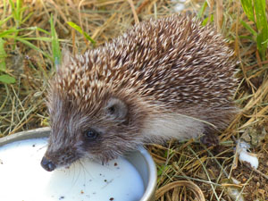

Пример работы переводчика на странице.
Просто выделите мышкой любой участок текста на странице
Ёжик — один из самых известных лесных жителей. Любимое место обитания ежа – лиственные и смешанные леса. Болотистых местностей и исключительно хвойных массивов этот лесной житель избегает.
Всё тело ежа покрыто иголками (кроме брюшка, мохнатой мордочки и пушистых лапок). Глаза у колючего – словно две черные блестящие бусинки. Видит он плохо. Нос у ежа всегда влажный.
Рацион «колючего и сердитого жителя», как его нередко называют – насекомые, ужи, жабы, лягушки, улитки, мыши, змейки, земляника, малина.
Жилище ежа – гнездо или укрытие, сооружённое из листьев и веток у корней какого-либо дерева. Далеко от своего пристанища ёж не отходит. В дневное время суток в своём укрытии он находится постоянно. А ночью бродит по лесу, добывая себе пропитание.
Набрав вес за лето, досыта отъевшись, всю зиму ёж спит в своём гнезде. Активную деятельность он начинает лишь при температуре воздуха свыше пятнадцати градусов.
Поют ли ёжики? Да. По весне. Песня самца небогата красками. Это всего лишь монотонное пыхтение. Ёжик всегда «при параде». Никогда не снимает свой «колючий пиджак».
Перевод осуществляется благодаря API приложения Яндекс.Переводчик
Статья повзаимствована с сайта Детский Час